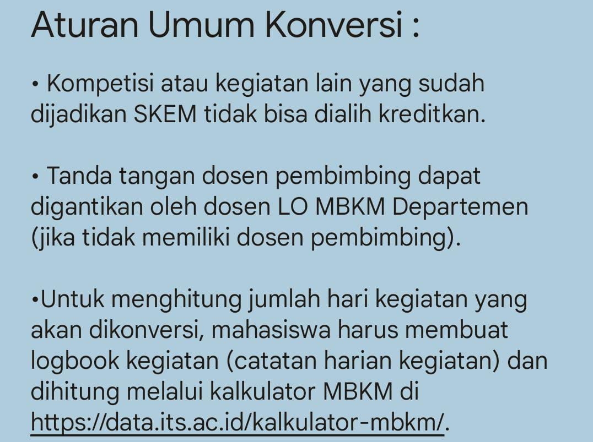

Harus ngikutin prosedurnya, kebetulan aku punya prosedur koversi tahun kemarin.
1. Prosedur Pengajuan Konversi Sks
Bagi mahasiswa yang akan konversi kegiatan (alih kredit) ke mata kuliah, wajib mempelajari aturan konversi DTS di https://univ.id/doc/110.
Setelah itu bisa mengajukan formulir konversi di https://univ.id/FormulirKonversiDTS.
2. Pendaftaran Mbkm.
Mahasiswa yang berencana mengikuti kegiatan MBKM atau yang sudah mendapatkan pengumuman penerimaan,
wajib melakukan pendaftaran MBKM untuk dapat dilakukan konversi SKS.
Harap mengajukan formulir pendaftaran kegiatan di https://univ.id/FormulirPendaftaranDTS
Formulir tersebut akan digunakan sebagai salah satu syarat konversi di semester berikutnya,
sehingga jika tidak mendaftarkan kegiatan ke departemen maka konversi tidak diakui.
3. Koversi MBKM
a. Kegiatan Kampus Mengajar atau Asisten Mengajar di Satuan Pendidikan angkatan kedua dan selanjutnya diberikan hak untuk mendapatkan 20 (dua puluh) SKS
b. SKS dapat diberikan kepada mahasiswa, apabila telah menyelesaikan laporan akhir program serta menyerahkan duplikasi sertifikat kepada Ketua Program Studi.
c. Konversi/ekuivalensi SKS dapat berlaku untuk Mata Kuliah yang belum pernah diprogramkan sebelumnya.
Last updated 3 mins ago
Gimana cara konversi sks? Soalnya semester ini mau magang, makasih yang udah jawab
